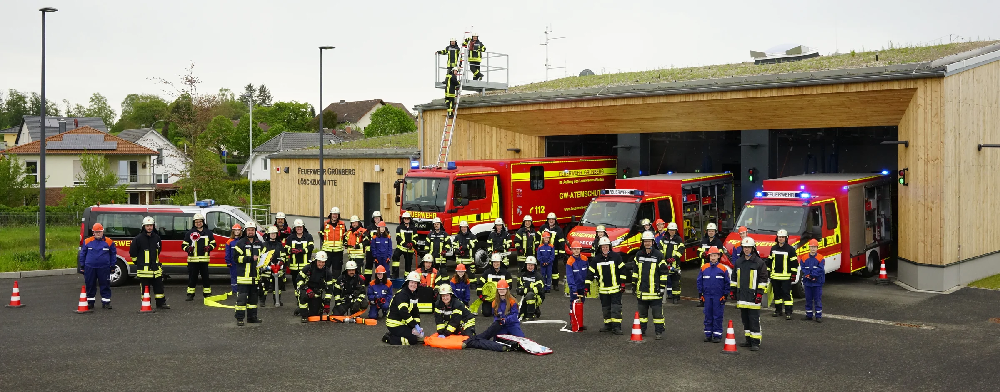
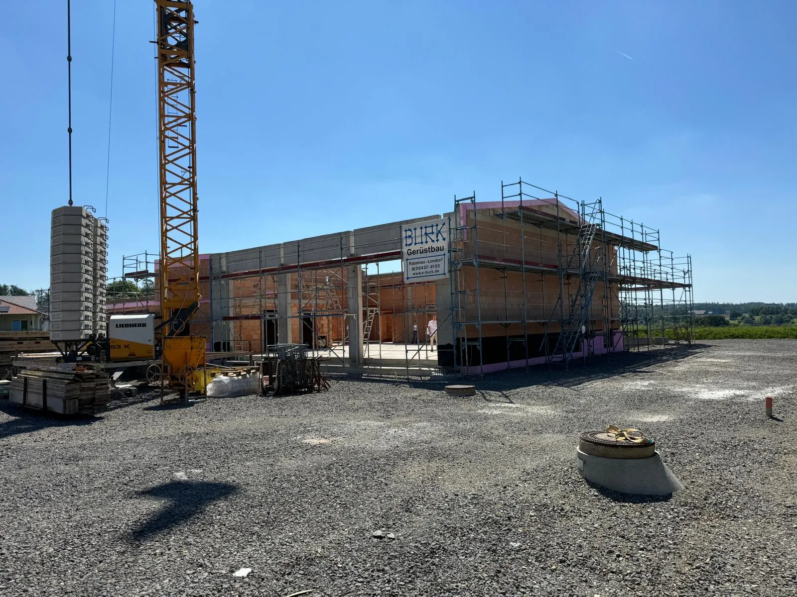
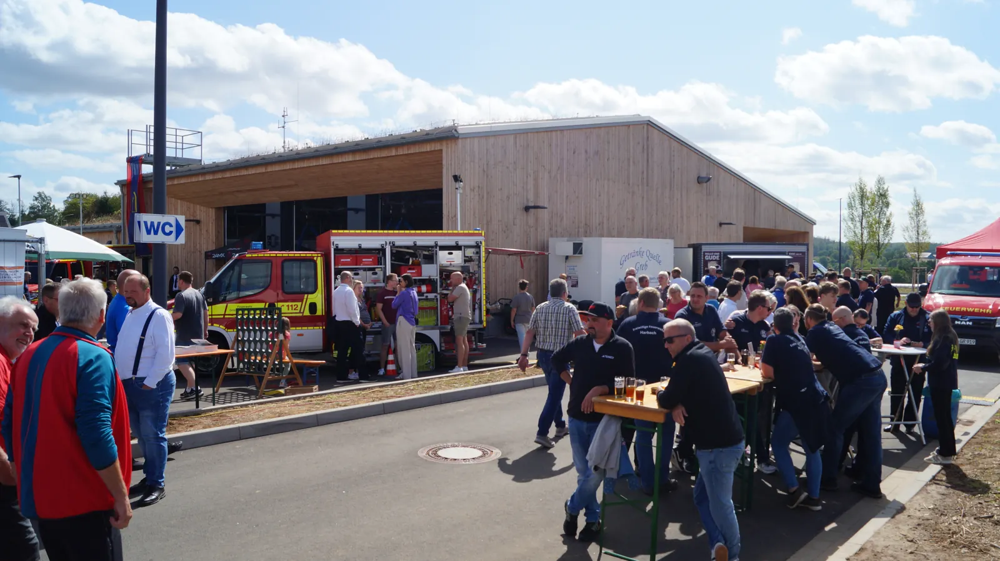

Unsere Geschichte
hat ihren Platz.
Beim Kommers stehen die Jubiläen, die Menschen und die Geschichten beider Wehren im Mittelpunkt.
Wettbewerbsbeitrag · Löschzug Grünberg-Mitte
Eine gemeinsame Zukunft
für Lehnheim und Stangenrod.
Wie aus zwei Ortsfeuerwehren eine Mannschaft wurde. Und wie wir gemeinsam die Voraussetzungen für den Brandschutz von morgen schaffen.
Unsere Geschichte entdecken
01 Feuerwehr der Vergangenheit
90 Jahre Feuerwehr Stangenrod. 75 Jahre Feuerwehr Lehnheim. Zwei Geschichten, die längst viele Gemeinsamkeiten haben.
Generationen von Ehrenamtlichen haben den Brandschutz in beiden Orten getragen. Sie haben ausgebildet, Gerätehäuser umgebaut, Nachwuchs gewonnen und das Dorfleben mitgestaltet.
Dieser Zusammenhalt ist die Grundlage unseres Projekts. Wir wollten ihn weitertragen und die Bedingungen schaffen, unter denen Feuerwehr auch künftig funktionieren kann.
Die Geschichte beider Wehren – zum Weitersehen auf YouTube.
02 Die Ausgangslage
Zwei Standorte mit begrenzten Möglichkeiten. Eine gemeinsame Aufgabe.
Beide Gerätehäuser waren baulich überaltert. Die Räume, Wege und Fahrzeugstellplätze ließen sich nur mit erheblichem Aufwand an die heutigen Anforderungen anpassen.
Gleichzeitig wollten wir Personal, Technik und Ausbildung gemeinsam organisieren, die Einsatzfähigkeit langfristig sichern und die Nachwuchsarbeit stärken.
Grundlage: Projektantrag und Festschrift 2026, S. 58–65.
03 Unser Weg
Der Zusammenschluss wurde über Jahre im Alltag vorbereitet. Gemeinsame Erfahrungen schufen Vertrauen.
Der Teilraum Mitte entsteht. Ab 2017 werden beide Einsatzabteilungen grundsätzlich gemeinsam alarmiert.
36 von 44 Aktiven nehmen an der moderierten Dienstversammlung in der Gallushalle teil. Chancen und Bedenken werden gesammelt und gewichtet.
Die Stadtverordnetenversammlung beschließt den gemeinsamen Neubau für Lehnheim und Stangenrod.
Alle regulären Ausbildungseinheiten finden gemeinsam statt. Mittwoch und Freitag wechseln sich ab – die Gewohnheiten beider Wehren finden ihren Platz.
Einsatzabteilungen und Jugendfeuerwehren werden organisatorisch zusammengeführt. Die gemeinsame Führung bezieht beide Ortsteile ein.
„In dem Moment, als unsere beiden Wehren endgültig zu einer Einsatzabteilung wurden, hatten wir bereits vier Jahre komplett gemeinsam geübt.“
04 Das gemeinsame Zuhause
Am 21. März 2026 ziehen Fahrzeuge, Ausrüstung und Mannschaften an einen Standort. Der Blaulichtkorso durch beide Orte macht den Übergang sichtbar.

Die Bauphase im ZeitrafferAus einem PlanDas neue Haus bündelt Mannschaft und Ausrüstung. Ausbildung, Vorbereitung und Begegnung finden an einem Ort statt.
Der Weg dorthin brauchte Geduld: Der zunächst für Sommer 2025 geplante Einzug verschob sich, weil Baumängel behoben werden mussten. Der gemeinsame Dienst ging währenddessen weiter.
05 Entwicklung in Zahlen
Die Lehnheimer Jahresberichte 2022–2025 sind ausgewertet. Stangenrod und der Stand des Löschzugs Mitte im Oktober 2026 werden ergänzt.
| Kennzahl | 2022 | 2023 | 2024 | 2025 |
|---|
Die Vergleichsgrundlage wächst noch. Lehnheim allein beschreibt nicht die frühere Gesamtstärke beider Wehren. Seit 2022 wurde bereits gemeinsam ausgebildet. Aus diesen Daten lässt sich deshalb noch kein Vorher-nachher-Effekt des Zusammenschlusses ableiten.
06 21.–23. August 2026
90 Jahre Stangenrod, 75 Jahre Lehnheim und die Einweihung unseres Hauses. Ein Wochenende, an dem beide Orte erleben konnten, was über Jahre entstanden ist.

Beim Kommers stehen die Jubiläen, die Menschen und die Geschichten beider Wehren im Mittelpunkt.
Musik, Begegnungen und ein gemeinsamer Abend mit den Kinzenbachern bringen Menschen zusammen.
Einweihung, Blaulicht-Erlebnistag und Gründung der Minifeuerwehr machen den Projektabschluss zum gemeinsamen Erlebnis.
„Was man dabei nicht sofort sieht, sind die vielen Stunden Arbeit, die dahinterstecken.“
Die Vorbereitung und Durchführung trugen Kameradinnen und Kameraden, Familien und Unterstützende gemeinsam. Das Fest machte die neue Gemeinschaft für beide Orte sichtbar.
Unser Introfilm: Willkommen beim Löschzug Mitte07 Der Blick nach vorn
Die gemeinsame Jugendfeuerwehr und die beim Fest gegründete Minifeuerwehr geben der Nachwuchsarbeit ein neues Zuhause.
„Wir wollen eine Feuerwehr
für morgen aufstellen.“
Das Projekt schafft die gemeinsame Grundlage. Auf ihr bauen Ausbildung, Kameradschaft und Nachwuchsarbeit weiter auf. Wie sich die Mannschaft und die jungen Abteilungen entwickeln, wird mit den aktuellen Zahlen fortgeschrieben.
Dokumentation
Arbeitsstand vom 26. Oktober 2026. Die Projektgeschichte, Medien und Redenauszüge sind eingearbeitet. Die statistische Gesamtauswertung wird mit den noch ausstehenden Daten vervollständigt.
Projektantrag „Zwei Wehren – ein Standort: Zukunftssichere Feuerwehrstrukturen im ländlichen Raum“; Festschrift des Löschzugs Grünberg-Mitte 2026, insbesondere S. 57–87. Die Jahreszahlen der Jubiläen folgen den Veranstaltungsunterlagen.
Jahresberichte des Wehrführers Lehnheim 2022, 2023, 2024 und 2025 mit den Abschnitten Ausbildung, Einsätze, Lehrgänge und Personelles. Veröffentlicht werden ausschließlich zusammengefasste Zahlen. Personalzahlen beziehen sich auf das jeweilige Jahresende. Die Quellenzuordnung zu jeder Kennzahl steht in der Datentabelle.
Stephan Hahn, Rede zum Kommers am 21. August 2026 („Rede Freitag.docx“) und Rede zur Einweihung am 23. August 2026 („Rede Sonntag.pdf“, S. 3–4). Zitate beschreiben die persönliche Perspektive des Wehrführers.
Für den Wettbewerbsbeitrag bereitgestellte Aufnahmen aus dem Archiv und vom Projekt- und Festgeschehen. Die Filme öffnen auf YouTube; es werden keine YouTube-Videos automatisch geladen. Die Abbildungen der historischen Kapitel stammen aus den bereitgestellten Fotografien und Scans.